Blond, Estivol 2008

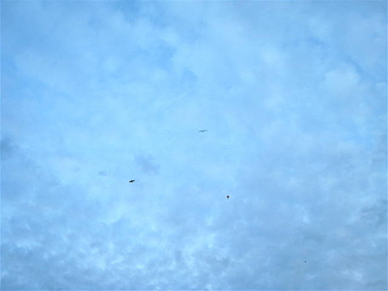
Blond, la Ferme de la Libarderie accueille Estivol qui rassemble des cerfs-volants, des ULMs, des autogyres, des paras etc. pour un grand spectacle de deux jours... Arrivée vendredi soir, pas beaucoup de vent, mais un petit vol quand même de mon Goéland avec la chauve-souris toute neuve de Jean-Marc et un delta léger.

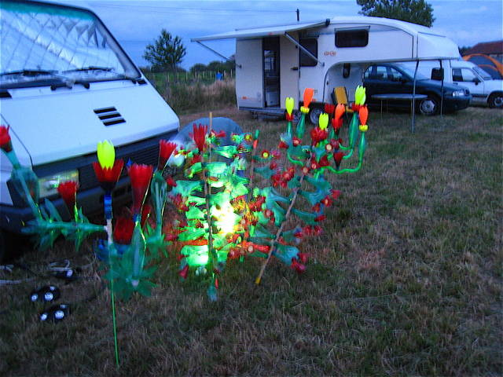
Néné a eu le temps de planter ses cactus, de trouver du 220 V et de les illuminer pour nous !

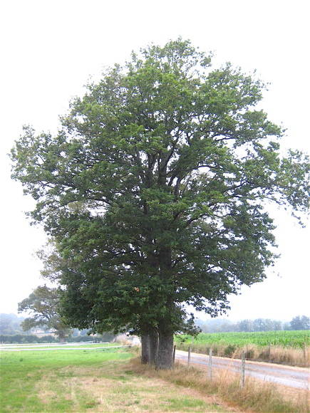
Samedi matin, je retrouve avec joie les beaux chênes centenaires sous lesquels les camping-cars et assimilés trouveront de l'ombre et resteront frais toute la journée...

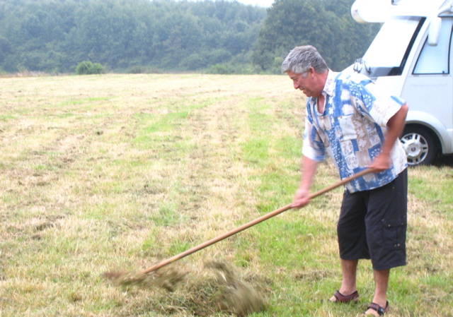
Jean-Pierre et Bernard Arus ont trouvé des râteaux et peaufinent la finition autour du campement...

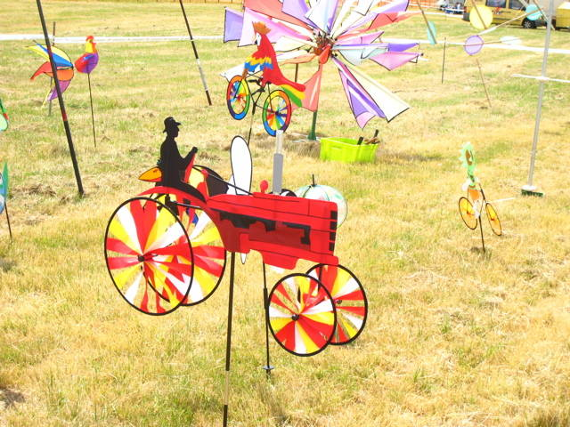
On est à la ferme, les JdVs s'en inspirent, bien sûr... Plus loin, Les fleurs de Marie-Claude poussent bien malgré un sol certes caillouteux, mais Jean-Marc a une pointerolle et une masse...

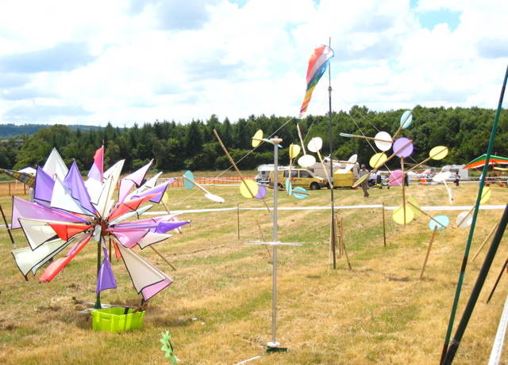
On retrouve aussi ce beau flocon de bannières et l'arbre à palettes rotatives...

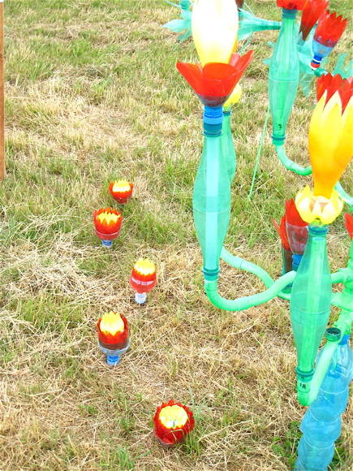
Néné a créé aussi de nouveaux cactus, encore bébés. Il veut faire son massif à sa façon...

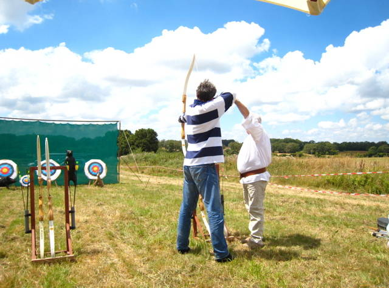
Il y a aussi d'autres attractions au sol, comme le tir à l'arc, avec initiation par une compagnie d'archers !

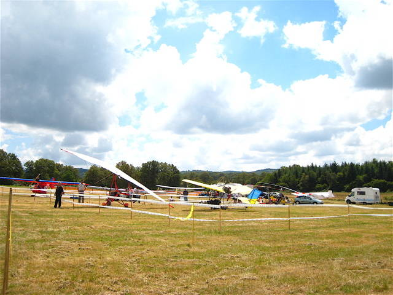
Les ULMs sont venus se poser sur le terrain, venant de partout, simili-avions en réduction, deltaplanes motorisés et autres formules...

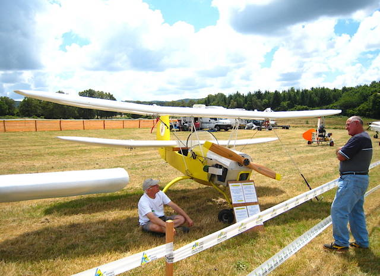
Le Pou du Ciel est une vieille conception (de M. Mignet) où l'aile arrière est censée porter comme l'aile avant, les deux se repliant en trois pour le remorquage derrière une voiture...

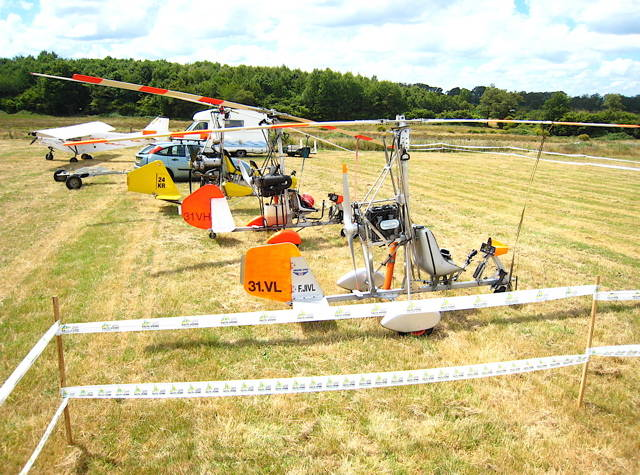
Mais la grande spécialité d'Estivol, ce sont les autogires, sortes d'hélicoptères dont le rotor n'est pas entraîné par le moteur mais par la vitesse d'avancement !

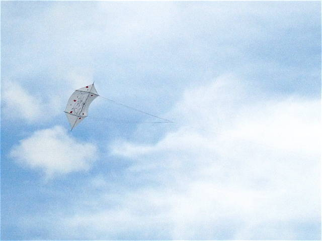
Il y a quand même un peu de vent et quelques cerfs-volants courageux, comme ce Rokkaku, portant une tête de femme dessinée au trait, le tout cousu, évidemment !

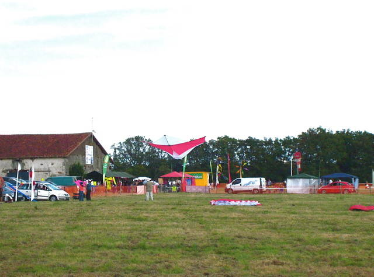
Le vent rebaisse, après mon Goéland, je sortirai ma raie Manta qui fera quelques beaux vols ! Gilles monte son Jessica UL de 6 m d'envergure qui meublera souvent le ciel tout seul !

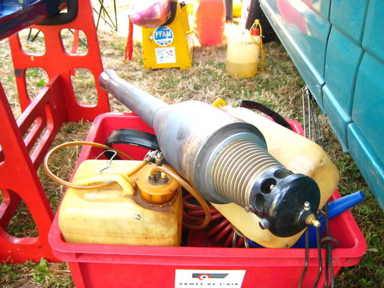
L'équipe ESCALAS de Toulouse fourbit ses 3 avions à statoréacteur. Le moteur est un gros tube inox où brûle un mélange 80% super / 20% fuel...

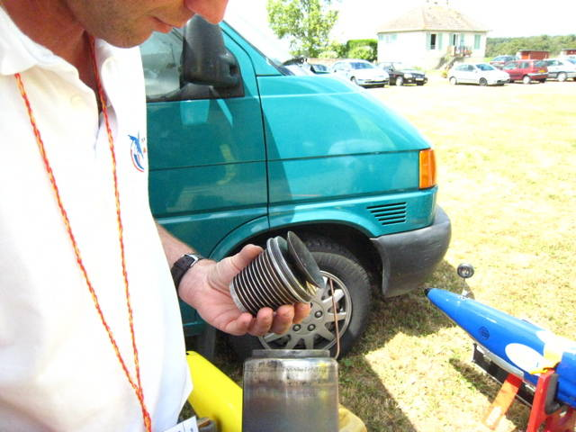
La chambre de combustion se visse dessus. Elle comporte un diaphragme-clapet qui vibre à chaque explosion, admet et pompe le carburant et l'air qui explosent, et rebelote. Le tout faisant un vacarme énorme et pompant son litre de carburant en 5 mn !

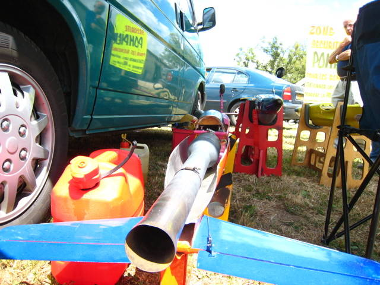
Le total se monte dans le fuselage, bien protégé de la chaleur évidemment ! Ils feront plusieurs vols en team à 3, spectaculaires, avec des croisements, des passages à 250 km/h et des diamètres d'évolution de 3 à 400 m ! Angoissant est l'arrêt brutal des moteurs... et du bruit et l'atterrissage qui suit moteur coupé, pas se rater avec ces machines pointues !

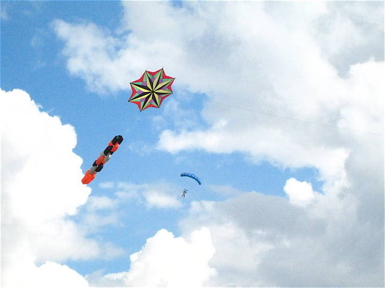
Pas mal de paras, aussi. Ils sautent... chacun depuis un deltaplane motorisé où il s'assoit en travers sur le siège passager ! Côté cerfs-volants, Jean-Claude a su faire voler son étoile avec sa queue en chaîne d'ancre qui a une bonne traînée...

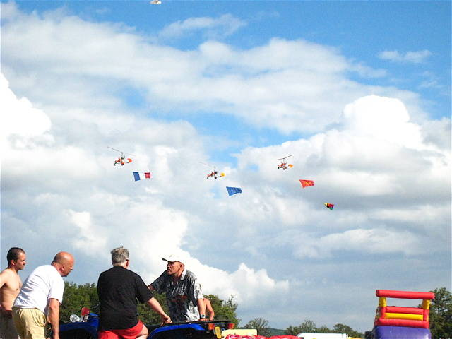
Les 3 autogires feront aussi un vol en équipe qui se termine par la parade avec les drapeaux.

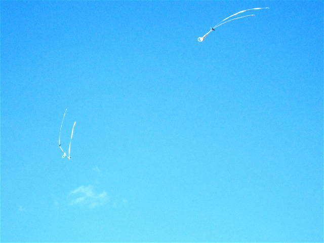
On verra aussi une belle présentation de 2 grandes ailes volantes électriques télécommandées, très puissantes et rapides, dotées de rubans en bout d'aile qui soulignent leurs trajectoires !

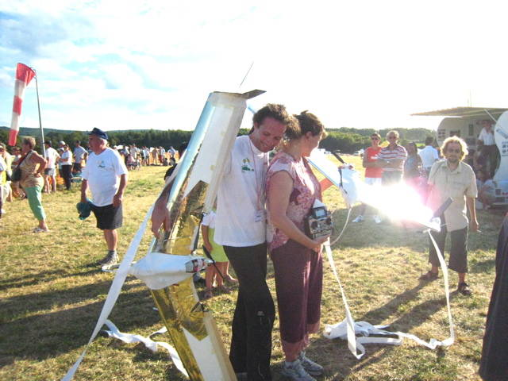
Marco et sa partenaire présentent leurs ailes de bien 2 m d'envergure, décorées métal brillant sur le dessus !

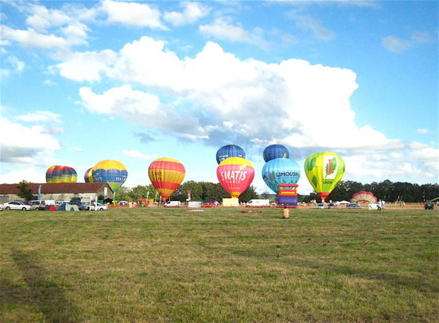
Vers le soir, les vols s'arrêtent, les montgolfières se gonflent majestueusement sur la large piste du terrain !

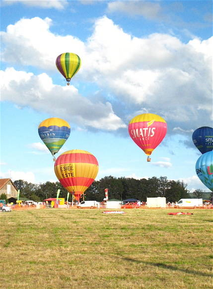
Et voilà, elles décollent presque simultanément pour un vol (avec de nombreux baptêmes pour les volontaires) qui n'ira pas bien loin aujourd'hui avec ce petit vent... Jean-Pierre gagnera (ex-aequo) le concours photo avec une photo de ce genre...

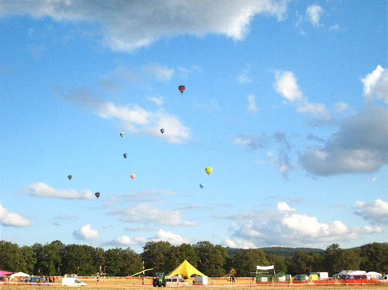
Elles s'éloignent quand même tranquillement, à neuf, la dixième ayant subi un contretemps technique...

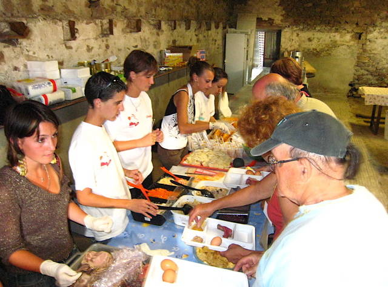
Au soir, dîner dans la grange de la ferme, à l'énorme charpente !

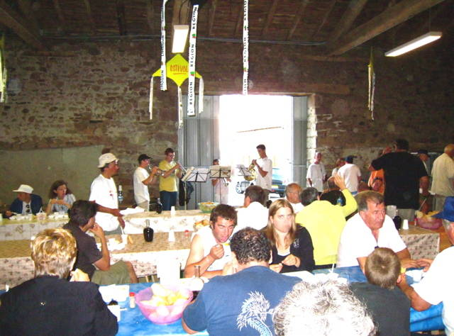
Dans la salle, un orchestre de 4 cuivres nous régalera sans nous assourdir tout au long du repas...

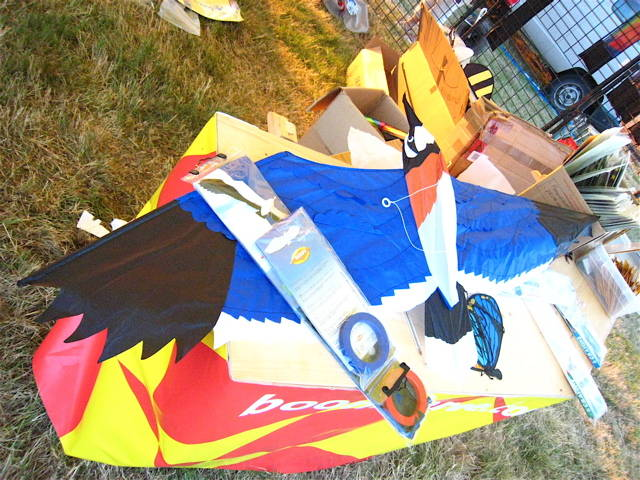
Le jour est loin de tomber (au contraire du vent...), je fais le tour des boutiques. Un bel oiseau coloré m'attire évidemment l'oeil...

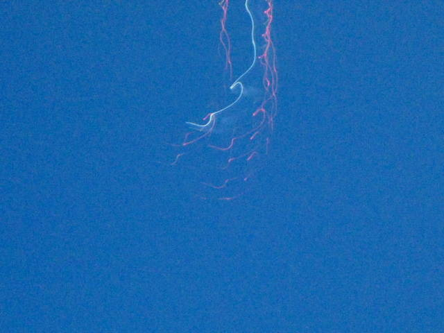
Vol de nuit, il faut monter assez haut, le vent au sol est à 180° de celui à 50 m ! Les ailes électriques font un show avec lumières spectaculaire...

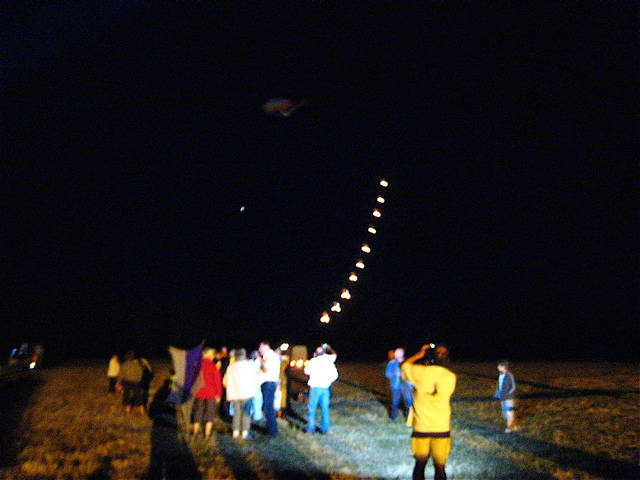
Bernard Arus peut quand même monter une partie de son chapelet de lampions...

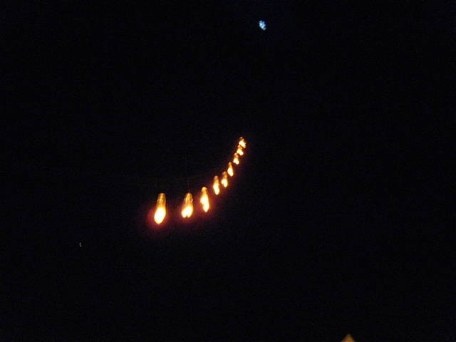
Les lampions sont des bouteilles coupées et dotées chacune d'une demi-bougie...

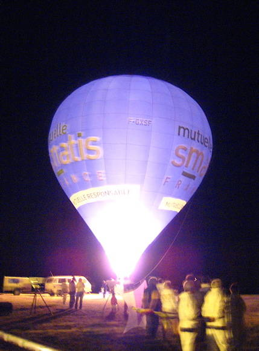
Ensuite, quelques montgolfières se dresseront pour un show sonore et lumineux très impressionnant... Mais ne décolleront pas, évidemment !

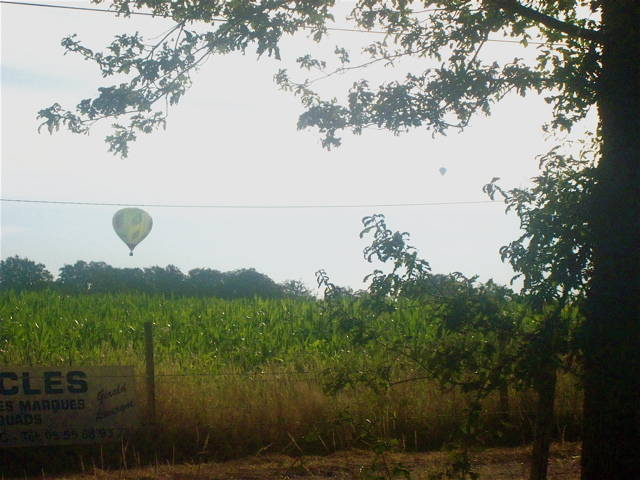
Au matin, tôt, les montgolfières passent au-dessus et me réveillent ! Une heure après, le réveil sonne, et je vois... deux montgolfières ! Elles n'ont pas dû faire beaucoup de chemin ! En fait, elles reviendront même se poser au point de départ !

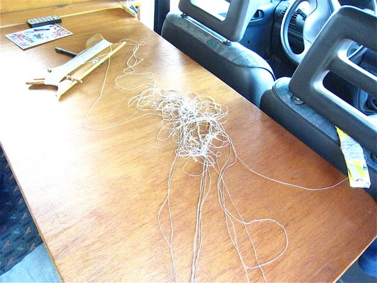
Je déjeune et le travail m'attend, après le vol de nuit d'hier soir, ficelle ramenée à la main dans l'herbe pour sauver l'atterrissage !

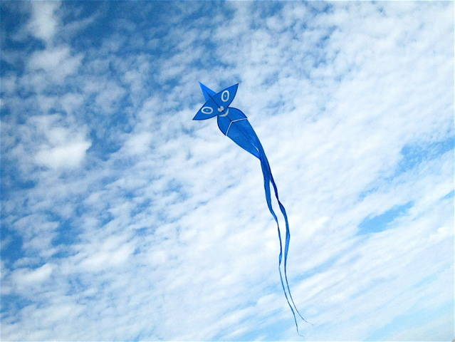
Un peu de vent dans une risée, ça ne durera pas. Bernard Arus en profite pour faire voler son Jang-Yang au nez cambré...

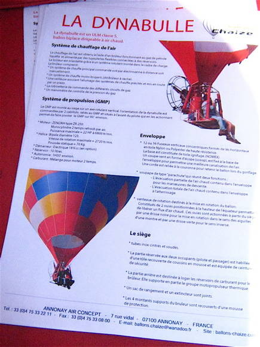
Petit tour vers la piste, une Dynabulle fait de la réclame. En fait, c'est une montgolfière avec un moteur genre paramoteur, orientable pour virer, et 2 sièges pendus dessous à la place de la nacelle ! Elle ne volera pas, dommage ! On peut se renseigner à http://www.ballons-chaize.com/ .

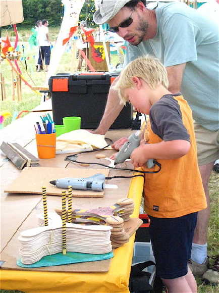
Un atelier permet aux enfants de construire leur boomerang en collant des pastilles de liège et en les taillant selon les indications du moniteur ! Ensuite, ils sont bons à jeter !

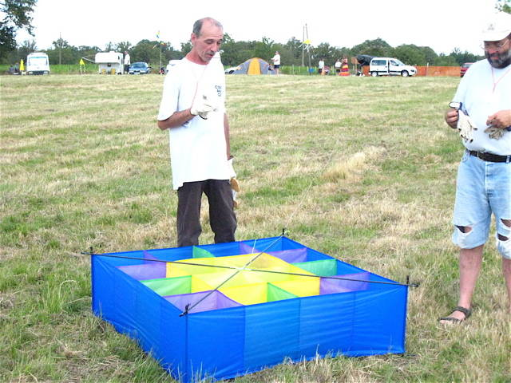
Un membre de Cody and Co a construit une étagère de Lecornu. Celle-ci est droite et vole diagonalement, tire très fort dès qu'il y a du vent pour la porter !

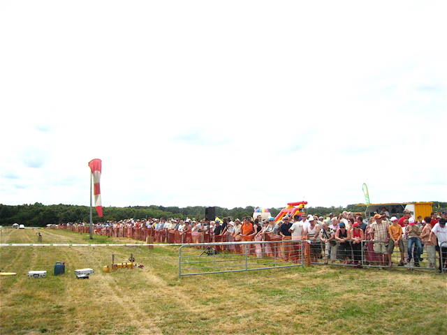
Dimanche après-midi, il fait beau et chaud, le public est assez abondant au bord de la piste !

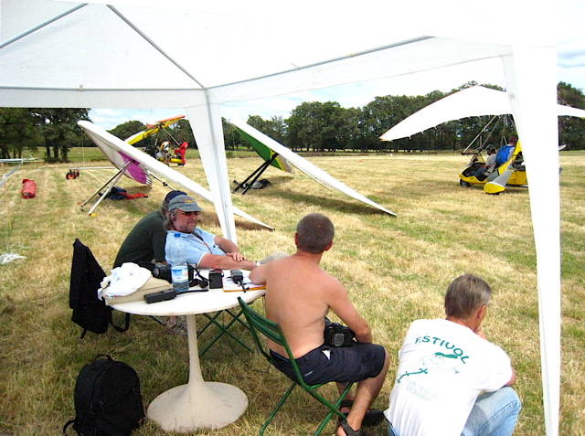
La Tour de Contrôle est installée, le Directeur des Vols fait le briefing, le programme et est en contact radio pour toutes les présentations... Il manque un peu seulement de contact avec le commentateur qui invite les cerfs-volants à venir en piste alors que les paras sont en train de sauter !

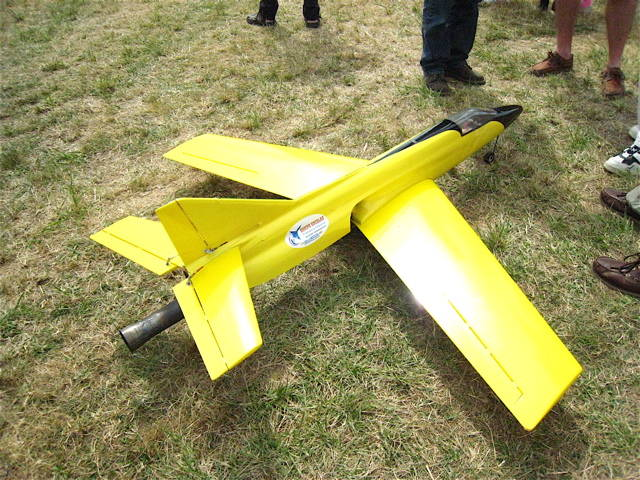
Les avions Statos sont gréés, et attendent le top de départ pour bondir...

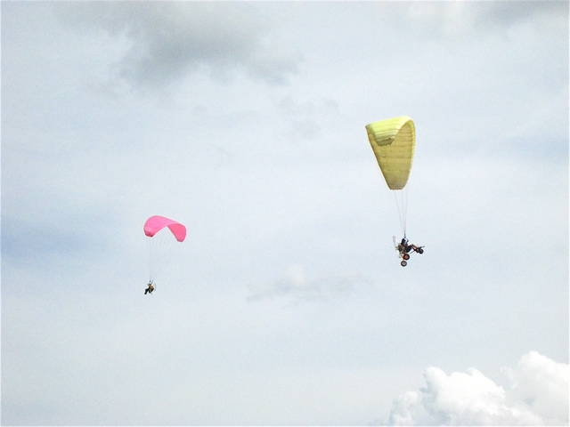
Les paramoteurs font leur petit spectacle. L'un est équipé... des jambes du pilote, l'autre a un petit chariot à roulettes ! Pour faire 10 m au sol, je ne vois pas bien l'intérêt du surpoids, mais je ne suis pas un spécialiste...

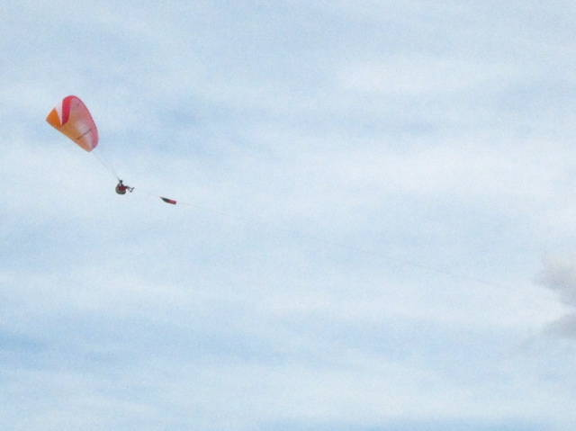
On verra aussi des lancements de paras au treuil ! Ils montent ainsi vers 50 m avant de larguer le câble et redescendent en plané. Très bien pour de l'écolage, ou sur un site porteur !

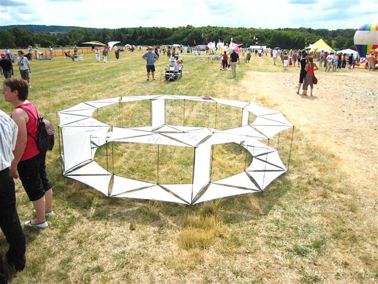
Petite parade des cervolistes avec photo de groupe. Marc a monté sa roue mais pas volé avec... Par contre, il a pu mettre en l'air sa raie, assis à l'arrière d'un Quad qui a astiqué la piste !

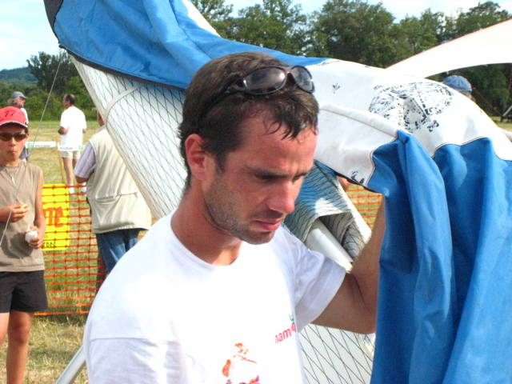
On a vu aussi un pilote de voltige en deltaplane. Il décolle à plat ventre sur un chariot (qui reste au sol !) tracté par un ULM et largue en altitude avant de redescendre en loopings et autres figures impressionnantes !

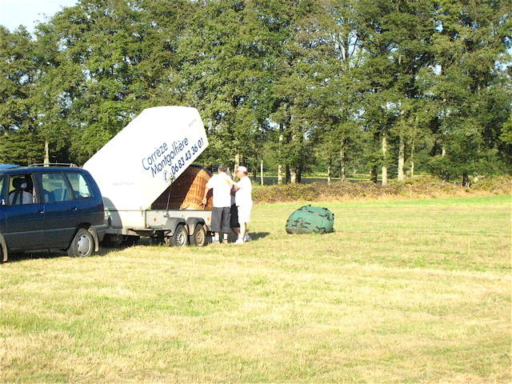
Jean-Pierre a gagné un vol en montgolfière au concours photo. Mais il a volé déjà le matin, et donne sa place à Marie-Hélène... C'est quand même lui qui s'active le plus au montage de la chose...

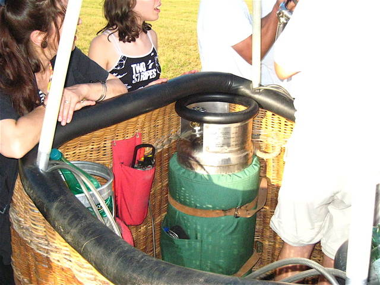
Dans la nacelle, les 4 bouteilles de gaz pour chauffer les 4000 m3, et quelques gadgets indispensables, et... ah oui, un peu de place pour les passagers...

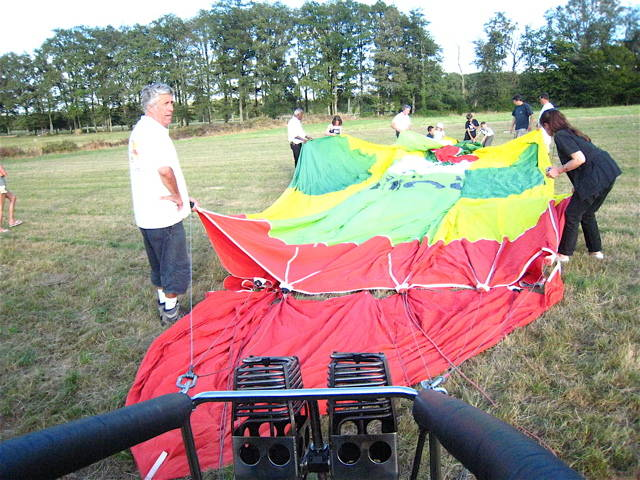
Le brûleur est monté sur la nacelle qui est ensuite couchée, on étend la toile devant et on l'accroche...

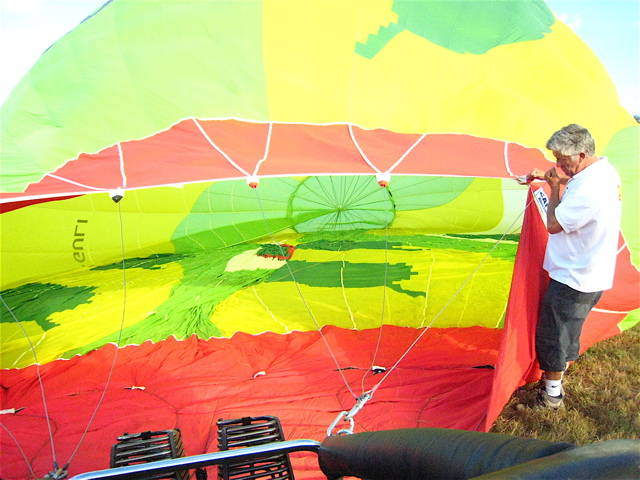
Ensuite on gonfle l'enveloppe à froid avec un solide ventilateur pendant que des aides tiennent ouverte l'entrée...

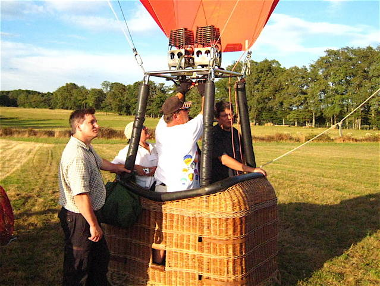
Quelques petits coups de brûleur, la montgolfière se dresse de toute sa hauteur, la nacelle prend une position normale et les passagers embarquent avant qu'elle ne décolle !

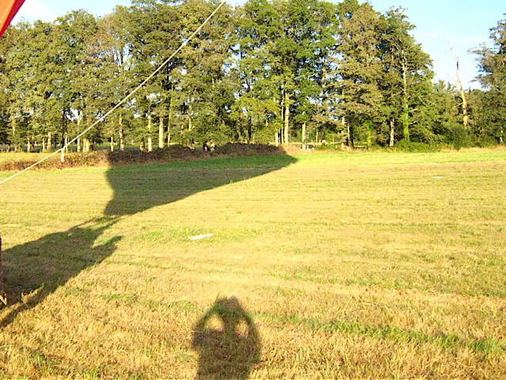
Ca va partir, l'ombre donne une idée de la taille de l'ensemble... qui va d'ailleurs devoir passer par-dessus les arbres là-bas...

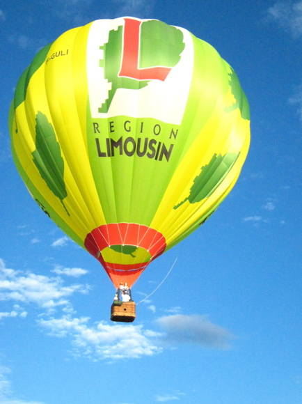
Et voilà, Marie-Hélène est partie vivre sa vie avec la splendide montgolfière du Limousin... Pas de crainte, elle sera revenue pour dîner des "restes" spécialement achetés par Estivol pour le repas de ce soir.
Blond : Un festival complet et intéressant parce que très varié. L'année dernière, les cerfs-volants avaient sauvé la fête par vent très fort. Cette année, c'est plutôt l'inverse, nous avons volé à 2 ou 3, mais c'était parfait pour les paras, ULMs etc... Je trouve quand même que les cervolistes devraient travailler un peu à se construire des CVs pour vent léger pour pouvoir faire honneur à leur invitation ! Merci en tout cas à Gérard Vauchan, Catherine et toute l'organisation !